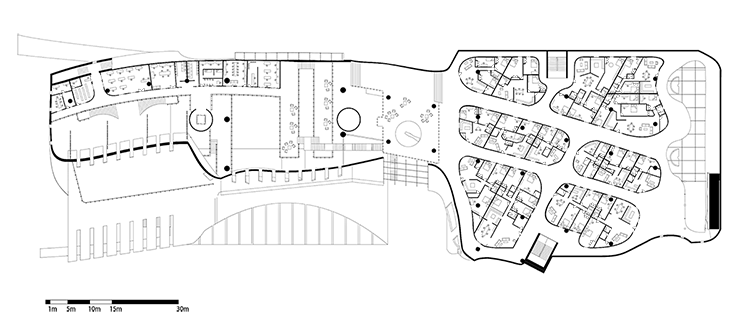
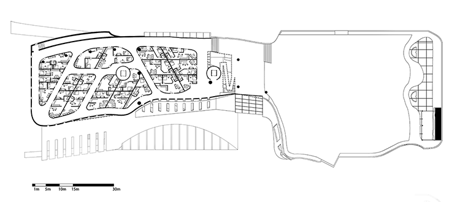
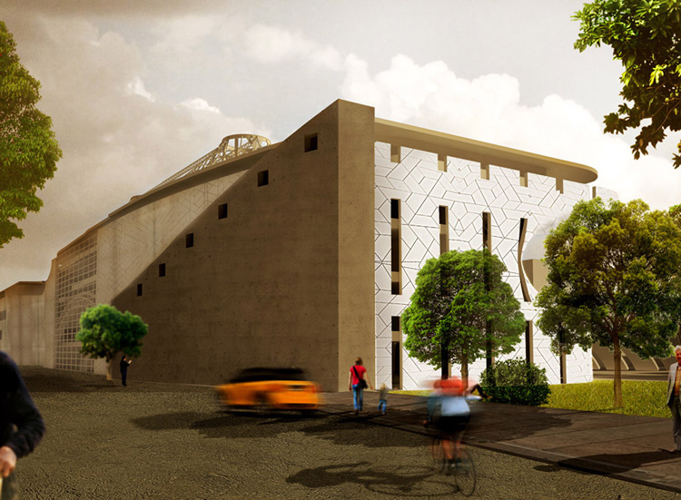
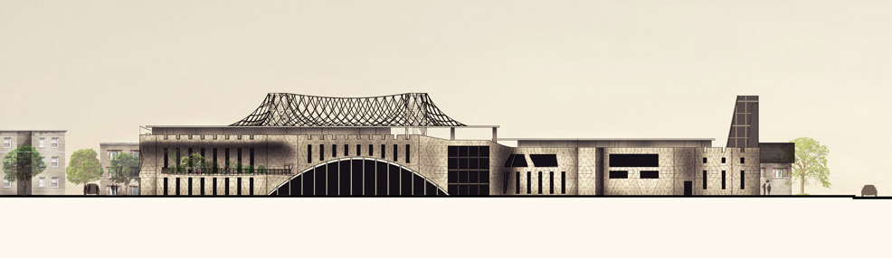
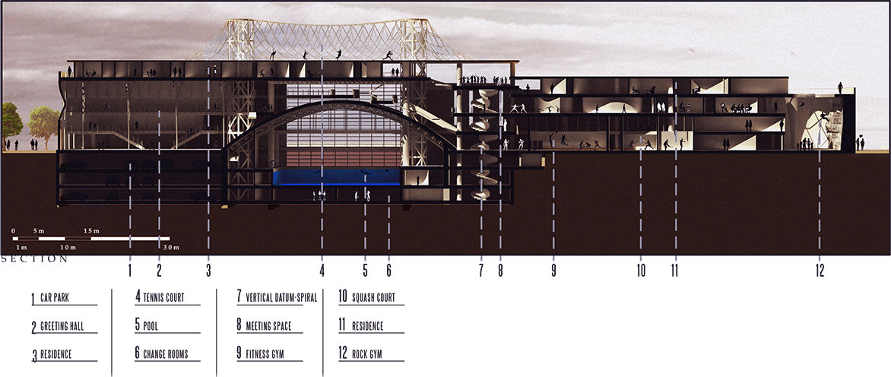
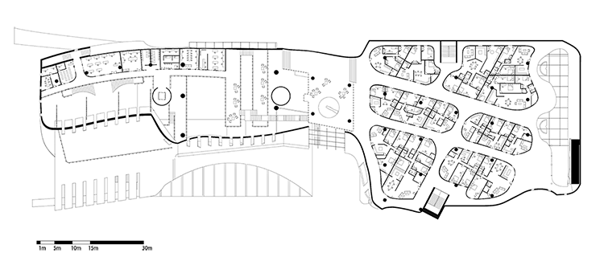
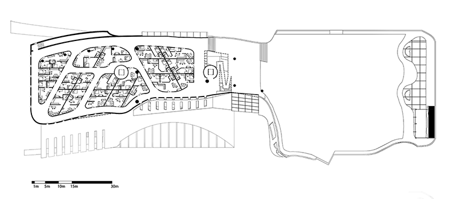
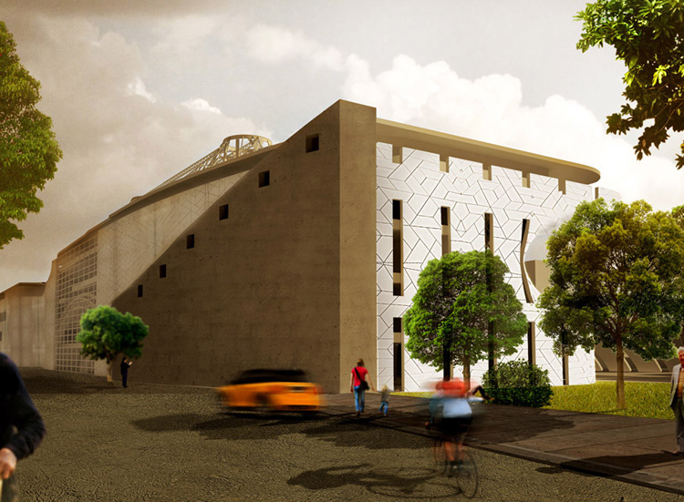
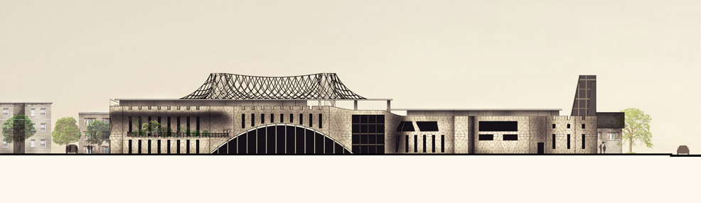
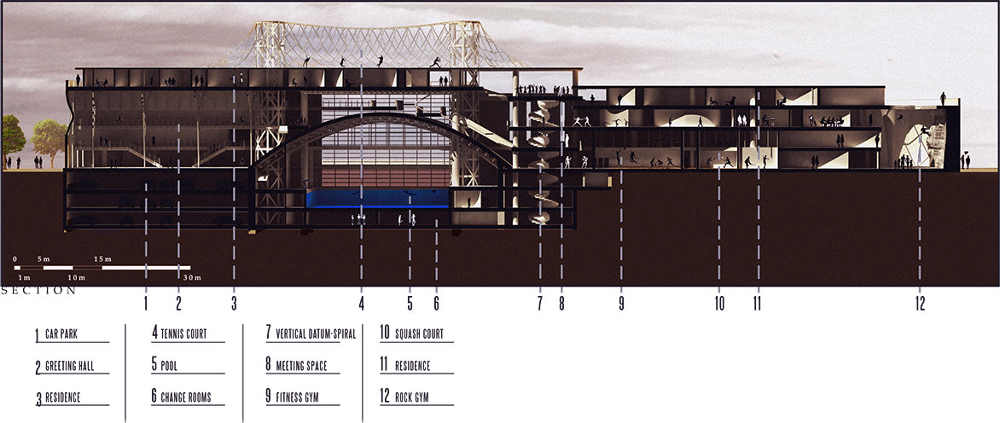

State Street Bank Cafe Design
Kaneco was awarded this State Street Bank Project by creating 2D plan and 3D visuals. The layout and visuals were created by Kaneco which incorporated the “53.3 Degrees” coffee color palettes and illustrations. The light wood bamboo & white front counter was created with required equipment including a cold deli counter and coffee station & pay station. Salamander grills are the main piece of equipment on the rear stainless-steel counter. White tile with metal framed bamboo shelving were added to the rear wall in order to create depth in the design.

PWC Cafe Renovation
Created layouts and visuals for the PWC Group located in downtown Dublin. The idea behind the layout is to combine an existing shop and café on the ground floor of the PWC building. The project looked to promote reusable and environmentally friendly materials for this new design. I was tasked with creating 2D layouts and 3D visuals for this design by reusing as many existing materials from the shop and café as possible. Existing counter space, refrigerated retail and shop shelving were all incorporated into one cohesive space with additional new materials. A new palette of white and wood was adopted into the visuals as well as a rebranding of the café name. 2D layout was designed using AutoCAD and 3D Visuals were created using Google Sketchup/Vray.

Kaneco Website
I was tasked with designing and building the Kaneco website. The website was initially designed using Figma but then transitioned to a combined design/build strategy using Wordpress and Elementor. I was able to use my previous experience in web design to help design and build this site. The site is structured around the Astra Wordpress theme with Elementor to create a custom website layout. Additional plugins used for SEO, Site security and UI features. Take a look at www.kaneco.ie

VHI Cafe Layout Design
This kitchen/dining space was designed in coordination with an Architecture firm designing the building. I was tasked with revising the original layout of the kitchen/server space. Light fixtures and the kitchen canopy were agreed in conjunction with the architect. Materials were also revised such as the front counter material and shelfing to the rear of the servery space

Guinness Brewery Testing Station
The Guinness Brewery in Dublin were looking to renovate their “Control Tower” and were asked by Kaneco to create a 2D layout and 3D visuals for their testing station. Specific products were specified for the stainless-steel worktops in order to test the content of a pint of Guinness. As this space was also to be used for providing tours to consultants, a textured stone wall was to be applied with the famous Guiness logo in black. I created the initial layout in AutoCAD which was then transferred to Google SketchUp for 3D visuals using the V-Ray Plugin.

 








